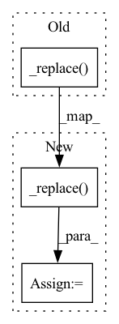

Pattern ID :5899

Before Change
mesh_edges = graph.edge_sets[0]
mesh_edges._replace(features=torch.cat((mesh_edges.features, edge_features), dim=0))
mesh_edges._replace(senders=torch.cat((mesh_edges.senders, senders), dim=0))
mesh_edges._replace(features=torch.cat((mesh_edges.receivers, receivers), dim=0))
new_graph = MultiGraph(node_features=graph.node_features, edge_sets=[mesh_edges])
// fully connect cross nodes
receivers_list = cross_nodes
After Change
mesh_edges = graph.edge_sets[0]
mesh_edges = mesh_edges._replace(features=torch.cat((mesh_edges.features, edge_features), dim=0))
mesh_edges = mesh_edges._replace(senders=torch.cat((mesh_edges.senders, senders), dim=0))
mesh_edges = mesh_edges._replace(receivers=torch.cat((mesh_edges.receivers, receivers), dim=0))
new_graph = MultiGraph(node_features=graph.node_features, edge_sets=[mesh_edges])
// fully connect cross nodes
receivers_list = cross_nodes
In pattern: SUPERPATTERN
Frequency: 3
Non-data size: 3
Instances
Fragment ID: 20795325
Project Name: wwmark/meshgraphnets
Commit Name: b356cba3b6e74ad2988dc385402df5e7577a8c6f
Time: 2022-01-27
Author: ruoheng.ma@gmail.com
File Name: ripple_machine.py
M Class Name: RippleNodeConnector
N Class Name: RippleNodeConnector
M Method Name: connect(6)
N Method Name: connect(6)
M Parent Class:
N Parent Class:
M File Name: ripple_machine.py
N File Name: ripple_machine.py
M Start Line: 149
M End Line: 267
N Start Line: 150
N End Line: 268
'>
Before Change
return self.visuals_dict
def save_current_results(self):
self.results_dict._replace(name=self.path)
self.results_dict._replace(result=self.output)
return self.results_dict._asdict()
def load(self):
After Change
return self.visuals_dict
def save_current_results(self):
self.results_dict = self.results_dict._replace(name=self.path, result=self.output)
return self.results_dict._asdict()
def load(self):
self.load_network(network=self.netG, network_label="netG")
'>
Fragment ID: 20795309
Project Name: janspiry/distributed-pytorch-template
Commit Name: fa431b651ba33c98a97275d4c62cac0628ffb6e3
Time: 2022-02-26
Author: 814019262@qq.com
File Name: models/ae_model.py
M Class Name: Model
N Class Name: Model
M Method Name: save_current_results(1)
N Method Name: save_current_results(1)
M Parent Class: BaseModel
N Parent Class: BaseModel
M File Name: models/ae_model.py
N File Name: models/ae_model.py
M Start Line: 81
M End Line: 82
N Start Line: 89
N End Line: 89
'>
Before Change
def forward(self, latent_graph, normalized_adj_mat=None, mask=None):
if self.stochastic_message_passing_used:
for graphnet_block in self.graphnet_blocks:
latent_graph._replace(node_features=torch.matmul(normalized_adj_mat, latent_graph.node_features))
latent_graph = graphnet_block(latent_graph)
return latent_graph
else:
for graphnet_block in self.graphnet_blocks:
After Change
def forward(self, latent_graph, normalized_adj_mat=None, mask=None):
if self.stochastic_message_passing_used:
for graphnet_block in self.graphnet_blocks:
latent_graph = latent_graph._replace(node_features=torch.matmul(normalized_adj_mat, latent_graph.node_features))
latent_graph = graphnet_block(latent_graph)
return latent_graph
else:
for graphnet_block in self.graphnet_blocks:
'>
Fragment ID: 20795326
Project Name: wwmark/meshgraphnets
Commit Name: b356cba3b6e74ad2988dc385402df5e7577a8c6f
Time: 2022-01-27
Author: ruoheng.ma@gmail.com
File Name: encode_process_decode.py
M Class Name: Processor
N Class Name: Processor
M Method Name: forward(4)
N Method Name: forward(4)
M Parent Class: nn.Module
N Parent Class: nn.Module
M File Name: encode_process_decode.py
N File Name: encode_process_decode.py
M Start Line: 274
M End Line: 274
N Start Line: 274
N End Line: 274